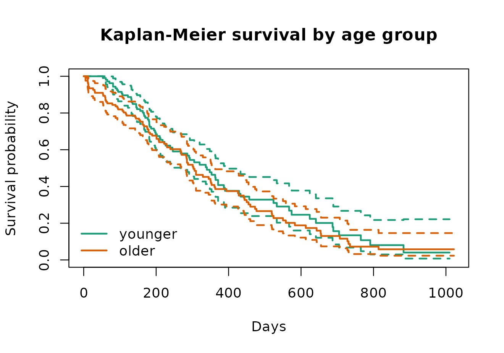
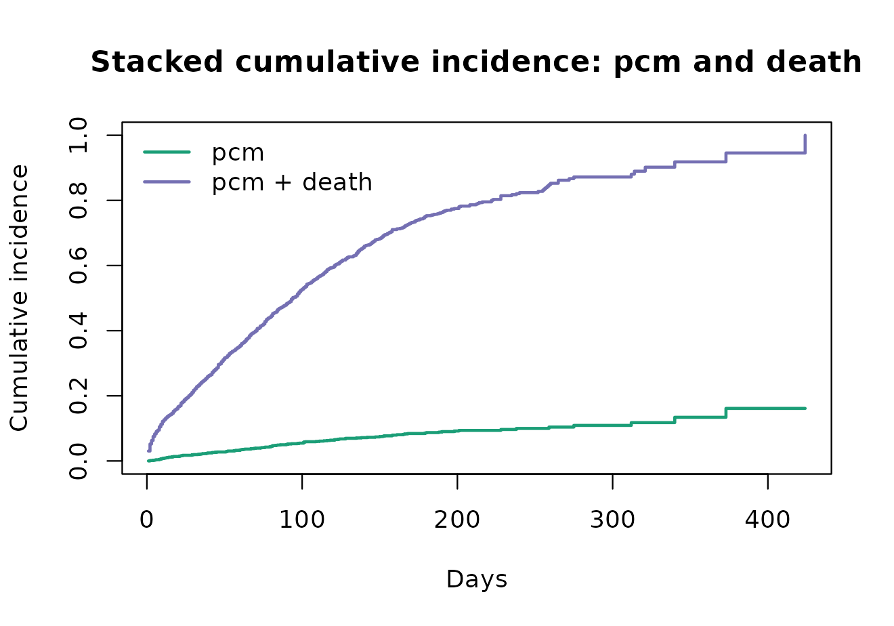
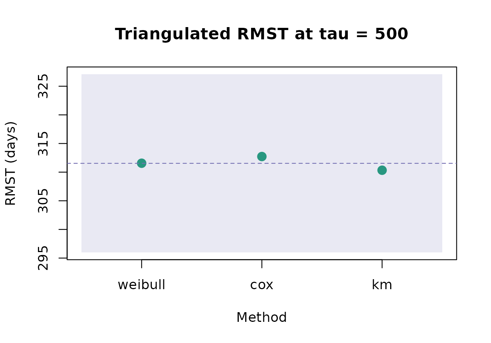

survkit gives one interface over the established
survival stack. You choose a method by name; the toolkit picks the
backend, runs a small-sample power check, and hands back a single typed
object that prints, summarises, predicts and tidies the same way
regardless of which estimator produced it.
What can it fit?
The method registry is the catalogue. Each row is an estimator;
available reports whether its backend is installed.
survkit_methods()
#> method kind backend available
#> 1 andersen_gill recurrent survival TRUE
#> 2 cause_specific competing survival TRUE
#> 3 cox cox survival TRUE
#> 4 cox_ridge cox survival TRUE
#> 5 cure cure flexsurvcure TRUE
#> 6 exponential parametric flexsurv TRUE
#> 7 fine_gray competing survival TRUE
#> 8 frailty frailty coxme TRUE
#> 9 gamma parametric flexsurv TRUE
#> 10 generalized_gamma parametric flexsurv TRUE
#> 11 gompertz parametric flexsurv TRUE
#> 12 interval_censored interval icenReg TRUE
#> 13 km nonparametric survival TRUE
#> 14 loglogistic parametric flexsurv TRUE
#> 15 lognormal parametric flexsurv TRUE
#> 16 spline spline flexsurv TRUE
#> 17 weibull parametric flexsurv TRUE
#> note
#> 1 recurrent events, Andersen-Gill
#> 2 competing risks, cause-specific hazard
#> 3 Cox proportional hazards
#> 4 ridge-penalised Cox (shrinkage for the few-events regime)
#> 5 mixture cure model (optional backend)
#> 6 parametric AFT, flexsurvreg(dist = 'exp')
#> 7 competing risks, Fine-Gray subdistribution
#> 8 mixed-effects Cox / shared frailty
#> 9 parametric AFT, flexsurvreg(dist = 'gamma')
#> 10 parametric AFT, flexsurvreg(dist = 'gengamma')
#> 11 parametric AFT, flexsurvreg(dist = 'gompertz')
#> 12 interval-censored regression (optional backend)
#> 13 Kaplan-Meier / Nelson-Aalen non-parametric baseline
#> 14 parametric AFT, flexsurvreg(dist = 'llogis')
#> 15 parametric AFT, flexsurvreg(dist = 'lnorm')
#> 16 Royston-Parmar flexible spline
#> 17 parametric AFT, flexsurvreg(dist = 'weibull')A first fit
A Weibull accelerated-failure-time model on the lung-cancer data:
fit <- survkit(survival::Surv(time, status) ~ age + sex, survival::lung,
method = "weibull")
fit
#> <survkit_fit> method = weibull (parametric, via flexsurv)
#> n = 228 events = 165
#> power: ok (82.5 events/predictor)
#> coefficients:
#> shape scale age sex
#> 0.2823 6.2749 -0.0123 0.3821survkit_tidy() gives the coefficient table with ratios
and confidence intervals; survkit_curve() gives predicted
survival on a time grid.
survkit_tidy(fit)
#> term component estimate std_error ratio_type ratio conf_low
#> 1 shape auxiliary 0.28229534 0.061883272 <NA> NA NA
#> 2 scale auxiliary 6.27485306 0.481366950 <NA> NA NA
#> 3 age covariate -0.01225703 0.006957472 TR 0.9878178 0.9744389
#> 4 sex covariate 0.38208514 0.127476840 TR 1.4653368 1.1413767
#> conf_high
#> 1 NA
#> 2 NA
#> 3 1.001380
#> 4 1.881248
survkit_curve(fit, times = c(100, 300, 500))
#> time value profile
#> 1 100 0.8618418 1
#> 2 300 0.5282034 1
#> 3 500 0.2846043 1Switching method, same interface
The Cox proportional-hazards fit reads the same and tidies the same:
cox <- survkit(survival::Surv(time, status) ~ age + sex, survival::lung,
method = "cox")
survkit_tidy(cox)
#> term component estimate std_error ratio_type ratio conf_low
#> 1 age covariate 0.01704533 0.009223273 HR 1.017191 0.9989686
#> 2 sex covariate -0.51321852 0.167457962 HR 0.598566 0.4310936
#> conf_high
#> 1 1.0357467
#> 2 0.8310985The small-sample gate
Survival models identify from events, not rows. Peduzzi et al.’s events-per-variable (EPV) heuristic – with as the conventional floor – is the standard guard against coefficients and standard errors that cannot be trusted from too few failures. On a small subset the gate flags the fit as under-powered:
small <- survival::lung[1:25, ]
survkit_power(survival::Surv(time, status) ~ age + sex + ph.ecog, small)
#> $n
#> [1] 24
#>
#> $n_events
#> [1] 22
#>
#> $n_predictors
#> [1] 3
#>
#> $events_per_variable
#> [1] 7.333333
#>
#> $min_epv
#> [1] 10
#>
#> $underpowered
#> [1] TRUE
#>
#> $verdict
#> [1] "underpowered"
#>
#> $advice
#> [1] "only 7.3 events per predictor (< 10): coefficients and standard errors are unreliable -- prefer a simpler model, a penalised fit, or abstain."survkit() runs this automatically and warns, so you can
simplify, penalise, or abstain rather than trust over-fit estimates.
Visualising a fit
The step curve is the picture the summary numbers are drawn from.
Fitting a Kaplan-Meier baseline and plotting it against age group shows
why: the two groups’ curves separate early and stay separated, which is
the pattern a Cox or Weibull regression on age is trying to
summarise as one hazard ratio or time ratio.
lung2 <- survival::lung
lung2$age_group <- factor(ifelse(lung2$age >= stats::median(lung2$age),
"older", "younger"),
levels = c("younger", "older"))
km_fit <- survival::survfit(survival::Surv(time, status) ~ age_group, lung2)
plot(km_fit, col = c("#1b9e77", "#d95f02"), lwd = 2, conf.int = TRUE,
xlab = "Days", ylab = "Survival probability",
main = "Kaplan-Meier survival by age group")
legend("bottomleft", legend = levels(lung2$age_group),
col = c("#1b9e77", "#d95f02"), lwd = 2, bty = "n")
Kaplan-Meier survival by age group (lung cancer trial). The confidence bands are pointwise 95 percent intervals. The older group’s curve sits below the younger group’s for the whole follow-up, so a single time-invariant hazard or time ratio is a defensible summary here – the curves neither cross nor converge.
The two curves separate within the first 100 days and the gap holds out to the point where the risk set is too thin to say more – there is no crossing that would signal a genuinely time-varying age effect.
Competing risks
With a multi-state response (the event is a factor whose first level is censoring), the Fine-Gray subdistribution hazard is one call:
mg <- survival::mgus2
mg$etime <- with(mg, ifelse(pstat == 1, ptime, futime))
mg$event <- with(mg, factor(ifelse(pstat == 1, "pcm",
ifelse(death == 1, "death", "censor")),
levels = c("censor", "pcm", "death")))
fg <- survkit(survival::Surv(etime, event) ~ age + sex, mg,
method = "fine_gray", cause = "pcm")
survkit_tidy(fg)
#> term component estimate std_error ratio_type ratio conf_low
#> 1 age covariate -0.01730171 0.005528135 HR 0.9828471 0.9722555
#> 2 sexM covariate -0.25975679 0.181707036 HR 0.7712391 0.5401567
#> conf_high
#> 1 0.9935541
#> 2 1.1011801Cumulative incidence
For competing risks the Aalen-Johansen cumulative incidence of each event is one call, and it accounts for the competing event rather than treating it as censoring:
ci <- survkit_cuminc(survival::Surv(etime, event) ~ 1, mg)
head(ci)
#> time group cause cif cif_se
#> 1 1 all pcm 0.000000000 0.000000000
#> 2 2 all pcm 0.001446164 0.001021853
#> 3 3 all pcm 0.001446164 0.001021853
#> 4 4 all pcm 0.002169246 0.001251056
#> 5 5 all pcm 0.002892329 0.001444071
#> 6 6 all pcm 0.003615411 0.001613935Stacking the two causes’ cumulative incidence shows how much of the total event probability each accounts for at any time, and confirms that the two curves sum to a proper (non-decreasing, bounded) overall failure probability:
pcm <- ci[ci$cause == "pcm", c("time", "cif")]
death <- ci[ci$cause == "death", c("time", "cif")]
grid_t <- sort(unique(c(pcm$time, death$time)))
pcm_y <- stats::approx(pcm$time, pcm$cif, xout = grid_t, method = "constant",
rule = 2)$y
death_y <- stats::approx(death$time, death$cif, xout = grid_t,
method = "constant", rule = 2)$y
plot(grid_t, pcm_y + death_y, type = "s", col = "#7570b3", lwd = 2,
xlab = "Days", ylab = "Cumulative incidence",
main = "Stacked cumulative incidence: pcm and death",
ylim = c(0, max(pcm_y + death_y)))
lines(grid_t, pcm_y, type = "s", col = "#1b9e77", lwd = 2)
legend("topleft", legend = c("pcm", "pcm + death"),
col = c("#1b9e77", "#7570b3"), lwd = 2, bty = "n")
Aalen-Johansen cumulative incidence of plasma-cell malignancy and death, stacked so the top line is the overall failure probability. Death dominates the overall event probability throughout follow-up, and pcm’s cumulative incidence rises far more slowly – exactly the separation the Fine-Gray hazard above is summarising.
Decision-relevant summaries
The restricted mean survival time (RMST) to a horizon is the area under the survival curve on , a summary that stays defined when the median is never reached:
km <- survkit(survival::Surv(time, status) ~ 1, survival::lung, method = "km")
survkit_rmst(km, tau = 365)
#> tau group rmst se conf_low conf_high
#> 1 365 all 263.2219 7.798859 247.9364 278.5073Predictions can be scored for discrimination and calibration. The concordance index, the censoring-weighted (IPCW) Brier score, and its index of prediction accuracy are returned together. The Brier score at horizon weights each subject by the inverse probability of not being censored by , where is the predicted survival probability and is the Kaplan-Meier estimator of the censoring distribution (Graf et al. 1999); the index of prediction accuracy, , rescales against a covariate-free reference :
survkit_score(cox, survival::lung, times = c(200, 400, 600))
#> time cindex brier ipa
#> 1 200 0.602853 0.2094928 0.03700922
#> 2 400 0.602853 0.2318152 0.01245320
#> 3 600 0.602853 0.1646295 0.01890319Triangulating across methods
Fitting the same question several ways is the consistency check
survkit is built for: methods that make different distributional
assumptions about the same hazard should still land near the same
restricted mean survival time. When they disagree by more than a
threshold relative spread, the fit is flagged – either
because the shape of the hazard has been misspecified by at least one of
the methods, or because the compared quantities are not actually the
same estimand (a marginal curve compared against a curve at a reference
covariate profile, for instance). A flag is a prompt to check which of
the two it is, not a verdict on its own:
tri <- survkit_triangulate(survival::Surv(time, status) ~ age + sex,
survival::lung,
methods = c("weibull", "cox", "km"), tau = 500)
tri$rmst
#> method tau rmst
#> 1 weibull 500 311.5567
#> 2 cox 500 312.7260
#> 3 km 500 310.3344
tri$flagged
#> [1] FALSEPlotting each method’s restricted mean as a point, with the
disagreement band drawn at threshold around their mean,
makes the same table easier to read at a glance – this “triangulation
fan” is the single picture that would have shown a real disagreement
immediately, rather than requiring a table lookup:
band_half <- tri$threshold * mean(tri$rmst$rmst) / 2
band_mid <- mean(tri$rmst$rmst)
plot(seq_len(nrow(tri$rmst)), tri$rmst$rmst, pch = 19, cex = 1.4,
col = "#1b9e77", xaxt = "n", xlab = "Method", ylab = "RMST (days)",
xlim = c(0.5, nrow(tri$rmst) + 0.5),
ylim = range(c(tri$rmst$rmst, band_mid - band_half, band_mid + band_half)),
main = sprintf("Triangulated RMST at tau = %d", tri$tau))
axis(1, at = seq_len(nrow(tri$rmst)), labels = tri$rmst$method)
rect(0.5, band_mid - band_half, nrow(tri$rmst) + 0.5, band_mid + band_half,
col = grDevices::adjustcolor("#7570b3", alpha.f = 0.15), border = NA)
abline(h = band_mid, lty = 2, col = "#7570b3")
Triangulation fan: restricted mean survival time to tau = 500 days under
three methods, with the shaded band spanning the mean plus or minus half
the relative-spread threshold. All three estimates fall inside the band,
matching the printed flagged = FALSE verdict above –
weibull, Cox and Kaplan-Meier concur within tolerance on this fit.
Extending the toolkit
Adding a method is one registry call; the public interface does not change.
survkit_register("exp_survreg", kind = "parametric", backend = "survival",
fit = function(formula, data, ...) {
raw <- survival::survreg(formula, data = data, dist = "exponential", ...)
list(raw = raw, coef = coef(raw), vcov = vcov(raw),
loglik = as.numeric(logLik(raw)), n = nrow(data),
n_events = NA_integer_, kind = "parametric", backend = "survival")
})
"exp_survreg" %in% survkit_methods()$method
#> [1] TRUE